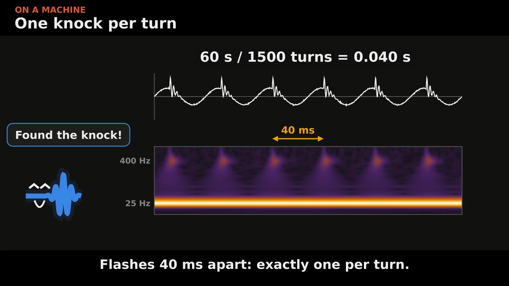

Explainers
Vibration, explained visually
The full versions of my LinkedIn posts: the videos, the maths, interactive boards, and the code and data to download.
Series 2
The FFT

The half of the FFT your analyser throws away
Real and imaginary parts, why half the FFT is a mirror, the winding machine, and why phase is the shape.
Video and carousel
Leakage and aliasing: the FFT's two traps
Why one clean tone smears across every bin, why a fast signal shows up at the wrong frequency, and the fix for each.
Video and interactive board
Wavelets: which frequency, and when
Two signals with one spectrum, the short-time FFT's one window size, and a wavelet map that finds a knock once per turn.
Film and interactive boardSeries 1
Harmonics

What the FFT actually shows
A signal pulled apart into its sine waves in 3D. From the side, it's the spectrum.
Video
Why we see harmonics
Square, sawtooth, triangle, a clipped sine and a real machine signal, built harmonic by harmonic.
Carousel and interactive board
Watch a signal come apart
Every example split into its harmonics in 3D, and why a symmetric wave has exactly zero even harmonics.
Video